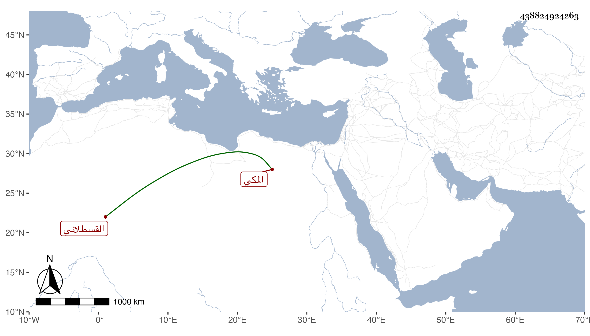

0902Sakhawi.DawLamic.ITO20230111-ara1.EIS1600.438824924263
Biography ID: 438824924263
156
محمد بن عبد الله بن أحمد بن حسن بن الزين محمد بن الأمين محمد بن القطب أبو السعادات الأكبر القسطلاني المكي . أجاز له أو لأخيه الآتي في سنة اثنتين وثمانمائة ركن الدين محمد بن إسمعيل بن محمد الخوافي .
